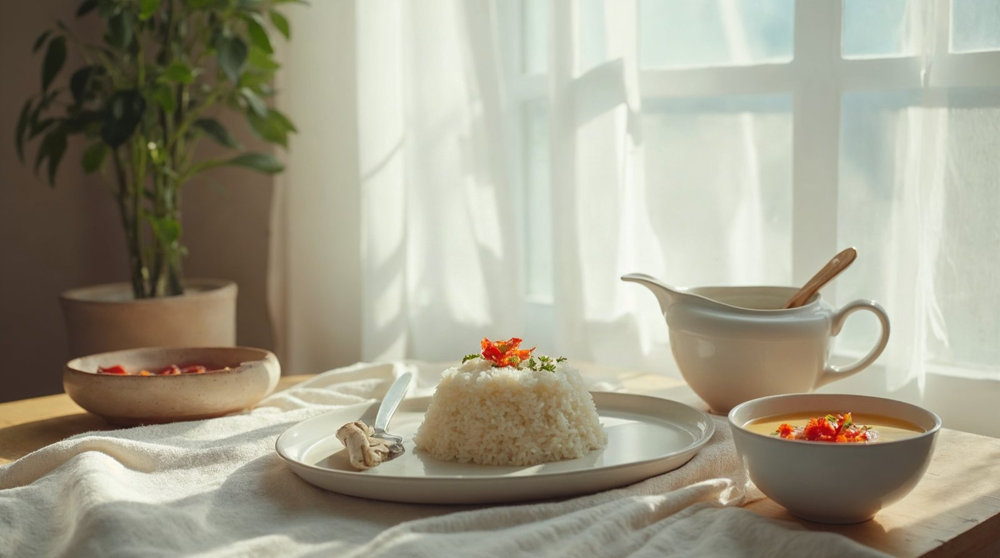

이종호 한의사 감수좋은꿈참사랑한의원 대표원장 (한의사 면허번호 19769)발행 2026-11-26 · 수정 2026-11-26
이 글의 차례
진료실 문이 열리고 엄마 품에 안긴 아이가 고개를 빼꼼 내밉니다. 엄마는 의자에 앉자마자 조심스럽게 묻습니다. "원장님, 이렇게 어린데 한약을 먹여도 되나요? 몇 살부터 먹이는 건가요?" 부모님이 가장 먼저, 가장 자주 꺼내시는 질문입니다.
그 질문 안에는 여러 마음이 겹쳐 있습니다. 감기를 달고 사는 아이가 안쓰럽고, 밥을 너무 안 먹어 걱정되고, 그러면서도 어린 몸에 무언가를 더 넣는 게 괜찮을지 망설여지는 마음입니다. 저는 그 망설임이 아주 자연스럽고 건강한 마음이라고 생각합니다.
그래서 저는 몇 살이라는 숫자부터 말씀드리지 않습니다. 같은 나이라도 아이마다 몸무게와 먹는 양, 잠과 대변의 모양이 다르고, 지금 먹고 있는 약도 다르기 때문입니다. 아이 한약은 나이보다 지금 이 아이의 상태를 먼저 보는 데서 시작합니다.
이 글에서는 부모님이 궁금해하시는 나이 이야기와 함께, 한약을 상의하기 전에 무엇을 확인하는지, 집에서 무엇을 적어 오시면 좋은지를 차례로 풀어 보겠습니다.
아이 한약은 정말 몇 살부터 먹을 수 있나요?
부모님이 듣고 싶어 하시는 답은 대개 숫자 하나입니다. 하지만 아이 한약에는 모든 아이에게 똑같이 적용되는 출발 나이가 정해져 있다기보다, 아이의 발달 단계와 몸 상태에 따라 상담 여부와 방법이 달라진다고 이해하시는 편이 정확합니다.
돌 전 아기는 아직 소화 기관과 간, 콩팥이 자라는 중이라 무엇이든 더 조심스럽게 봅니다. 이 시기에는 한약보다 수유와 이유식, 잠의 리듬을 먼저 살피는 경우가 많고, 꼭 필요하다고 판단될 때에만 소아청소년과 진료 상황을 함께 확인하며 아주 신중하게 상의합니다.
돌이 지나 밥을 먹기 시작하고 걸음마를 하는 시기부터는 상담을 받으러 오시는 부모님이 많아집니다. 이 무렵부터는 아이가 무엇을 얼마나 먹는지, 감기가 얼마나 자주 오는지, 잠은 어떤지를 보며 한약을 상의할 수 있는지 함께 판단합니다.
유치원과 초등학교 시기에는 입이 짧거나, 쉽게 지치거나, 감기가 잦거나, 잠이 얕은 문제로 상담하시는 경우가 흔합니다. 이때도 나이보다 지금의 불편이 무엇인지, 그 불편이 생활과 어떻게 엮여 있는지를 먼저 봅니다.
왜 나이보다 아이의 상태를 먼저 볼까요
어른도 체격과 체질에 따라 한약의 양과 구성이 달라지듯, 아이는 그 차이가 훨씬 큽니다. 같은 다섯 살이라도 몸무게가 많이 차이 날 수 있고, 한 아이는 밥을 잘 먹는데 다른 아이는 몇 숟가락에 그치기도 합니다. 그래서 숫자만으로는 정할 수가 없습니다.
또 아이의 몸은 자라는 중이라 몇 달 사이에도 상태가 바뀝니다. 지난 계절에 맞던 처방이 이번 계절에는 맞지 않을 수 있고, 감기를 앓는 중과 앓고 난 뒤도 다르게 봅니다. 그래서 아이 한약은 한 번 정하고 끝나는 것이 아니라 아이의 흐름을 따라가며 다시 살피는 일입니다.
마지막으로, 아이의 불편은 생활과 아주 가깝게 붙어 있습니다. 늦게 자는 습관, 간식으로 배가 찬 채 맞는 식사 시간, 바깥 놀이가 부족한 하루가 입맛과 잠, 대변에 그대로 드러납니다. 생활을 먼저 바꿔 보고, 그래도 남는 부분이 있을 때 한약을 함께 상의하는 순서가 자연스럽습니다.
부모님이 자주 헷갈리시는 것
첫째, 보약은 아무 때나 먹이면 좋다는 생각입니다. 아이가 지금 열이 나거나 기침이 심하거나 배탈이 난 상태라면, 기운을 돋우는 쪽보다 지금의 불편을 먼저 살펴야 합니다. 같은 아이라도 언제 먹이느냐에 따라 상의 내용이 달라집니다.
둘째, 형제가 먹던 한약을 동생에게 나눠 먹여도 된다는 생각입니다. 형제라도 나이와 몸무게, 체질과 지금의 상태가 다르기 때문에 처방은 아이마다 따로 정합니다. 남은 한약을 다른 아이에게 먹이는 것은 권하지 않습니다.
셋째, 한약을 먹으면 소아청소년과 진료는 쉬어도 된다는 생각입니다. 예방접종, 성장 발달 확인, 열이나 감염에 대한 진료는 소아청소년과에서 계속 챙기셔야 합니다. 한의원 상담은 그 진료와 나란히 가는 것이지, 대신하는 것이 아닙니다.
넷째, 한약은 맛이 쓰니 아이가 다 먹지 못하면 소용없다는 걱정입니다. 아이가 먹을 수 있는 양과 형태를 처음부터 함께 고민합니다. 먹기 어려워한다면 다음 진료에서 말씀해 주시면 양이나 먹는 방법을 다시 상의합니다.
상담 전에 집에서 확인해 볼 것
한약 상담을 앞두고 있다면, 아이의 지난 몇 주를 한번 떠올려 보세요. 아래 질문에 답이 바로 나오지 않아도 괜찮습니다. 생각해 보는 것만으로도 진료실에서 이야기가 훨씬 수월해집니다.
- 하루 세 끼를 어느 정도 먹는지, 간식은 언제 무엇을 먹는지
- 잠드는 시각과 깨는 시각, 밤에 깨서 우는 날이 있는지
- 대변은 며칠에 한 번, 어떤 모양으로 보는지
- 최근 두세 달 사이 감기나 열, 장염을 몇 번 앓았는지
- 소아청소년과에서 받은 약이나 진단, 알레르기가 있는지
- 키와 몸무게를 마지막으로 잰 날과 숫자
특히 음식이나 약에 알레르기가 있었던 적이 있다면 꼭 알려 주세요. 두드러기가 났던 음식, 먹고 토했던 약처럼 작은 기억도 처방을 정할 때 참고가 됩니다.
아이 한약은 어떤 모양으로, 얼마나 먹나요?
아이 한약은 어른보다 한 번에 먹는 양이 적습니다. 나이와 몸무게, 아이가 한 번에 삼킬 수 있는 양을 함께 고려해 정하고, 아이가 먹기 어려워하면 하루에 나누어 먹는 횟수나 양을 조정하기도 합니다.
맛도 부모님이 많이 걱정하시는 부분입니다. 한약은 쓴맛이 나는 경우가 많아서, 아이가 처음 한두 번은 고개를 돌리는 일이 흔합니다. 그럴 때 억지로 먹이기보다 먹는 시간을 정해 두고 짧게 끝내는 것, 다 먹은 뒤 물 한 모금으로 입을 헹구게 하는 것만으로도 부담이 줄어드는 경우가 있습니다.
먹는 기간도 아이마다 다릅니다. 짧게 먹고 상태를 본 뒤 이어 갈지 쉬어 갈지 정하는 경우가 많고, 처음부터 길게 정해 두기보다는 진료 때마다 아이의 흐름을 보며 다시 정하는 쪽을 택합니다.
보관은 받으실 때 안내드리는 방법을 따라 주세요. 아이가 혼자 꺼내 먹지 않도록 손이 닿지 않는 곳에 두시는 것도 잊지 마세요.
계절과 자라는 시기에 따라 달라지는 것
아이의 몸은 계절을 많이 탑니다. 환절기에는 콧물과 기침이 잦아지고, 여름에는 땀을 많이 흘리며 입맛이 떨어지고, 겨울에는 바깥 놀이가 줄어 잠과 대변의 리듬이 흐트러지기 쉽습니다. 그래서 같은 아이라도 어느 계절에 상담하느냐에 따라 살피는 부분이 달라집니다.
어린이집이나 유치원에 처음 다니기 시작하는 해, 초등학교에 입학하는 해처럼 환경이 크게 바뀌는 시기에도 아이는 몸으로 먼저 반응합니다. 배가 아프다는 말이 늘거나 잠이 얕아지는 일이 흔해서, 이런 시기에는 마음의 긴장도 함께 여쭙니다.
키가 부쩍 크는 시기에는 먹는 양이 갑자기 늘기도 하고, 반대로 쉽게 피곤해하기도 합니다. 성장과 관련된 걱정은 소아청소년과에서 성장 곡선을 함께 확인하시는 것이 좋고, 한의원에서는 잠과 식사, 활동량처럼 생활의 바탕을 살핍니다.
먼저 이렇게 여쭙니다
아이와 처음 오시면 저는 대략 이런 순서로 여쭙니다. 아이가 낯설어하면 부모님 무릎에 앉힌 채로 천천히 진행합니다.
- 한약을 상의하고 싶으신 가장 큰 이유가 무엇인가요?
- 그 불편은 언제부터, 어떤 때 더 심해지나요?
- 아이가 지금 먹고 있는 약이나 영양제가 있나요?
- 태어날 때나 영유아 검진에서 들으신 이야기가 있나요?
- 어린이집이나 유치원, 학교 생활은 어떤가요?
- 가족 가운데 알레르기나 비염, 아토피가 있는 분이 계신가요?
부모님이 생각하시는 걱정과 아이가 실제로 불편해하는 것이 다를 때도 있습니다. 그래서 아이가 말을 할 수 있는 나이라면 아이에게도 직접 물어봅니다. 어디가 불편한지, 밥은 왜 먹기 싫은지, 아이의 대답에서 실마리를 찾는 경우가 많습니다.

일상에서 먼저 해 볼 수 있는 것
한약을 상의하기 전후로 생활에서 함께 해 볼 수 있는 것이 있습니다. 거창한 것보다 아이의 하루 리듬을 조금씩 일정하게 만드는 것이 먼저입니다.
- 잠드는 시각을 일주일 동안 같게 맞춰 보기
- 식사 한 시간 전부터는 간식과 단 음료 줄이기
- 하루 한 번은 바깥에서 뛰어놀 시간 만들기
- 식사는 정해진 자리에서 30분 안에 마치기
- 잠들기 전 화면 보는 시간 줄이기
입이 짧은 아이라면 억지로 다 먹이려 하기보다 조금 덜 담아 주고 다 먹었을 때 칭찬해 주는 쪽이 오래갑니다. 식탁이 싸우는 자리가 되면 아이는 밥 시간을 더 피하게 됩니다.
감기가 잦은 아이라면 손 씻기와 충분한 잠, 실내 습도를 먼저 챙겨 보세요. 어린이집이나 유치원에 처음 다니기 시작한 해에는 감기가 잦은 것이 흔한 일이라, 한 해 동안의 흐름을 함께 보며 판단합니다.
한의원에서 함께 살필 수 있는 경우
- 입이 짧고 편식이 심해 식사 시간이 늘 길어지는 경우
- 조금만 놀아도 금방 지치고 자주 눕고 싶어 하는 경우
- 감기를 앓고 난 뒤 입맛과 기운이 쉽게 돌아오지 않는 경우
- 잠이 얕고 밤에 자주 깨거나 땀을 많이 흘리는 경우
- 배가 자주 아프다고 하거나 대변이 들쭉날쭉한 경우
좋은꿈참사랑한의원에서는 진찰한 내용을 바탕으로 생활에서 바꿔 볼 것과 함께 한약 상담이 지금 아이에게 맞는지를 정합니다. 한약을 정할 때는 아이가 먹는 약과 알레르기를 모두 확인한 뒤 나이와 몸무게에 맞춰 신중하게 양을 정합니다.
먹는 동안에는 아이의 입맛, 잠, 대변, 피부를 부모님과 함께 지켜봅니다. 배가 아프다고 하거나 대변이 갑자기 묽어지거나 피부에 무언가 올라오면 먹이기를 잠시 멈추고 한의원에 연락해 주세요. 소아청소년과에서 받은 약은 상의 없이 멈추지 않습니다.
한약을 먹는 동안 부모님이 지켜볼 것
한약을 먹기 시작하면 처음 며칠은 아이의 반응을 조금 더 자세히 봐 주세요. 입맛이 어떤지, 대변의 모양과 횟수가 달라지지 않았는지, 잠드는 모습은 어떤지, 피부에 붉은 기운이 올라오지 않는지를 살피시면 됩니다.
한약을 먹는 중에 감기에 걸리거나 열이 나면, 계속 먹일지 잠시 쉴지를 한의원에 물어봐 주세요. 소아청소년과에서 감기약을 새로 받으셨다면 그 약 이름도 함께 알려 주시면 됩니다.
변화가 바로 보이지 않는다고 서둘러 양을 늘리거나, 좋아 보인다고 다른 보약을 더하는 것은 권하지 않습니다. 궁금한 점이 생기면 언제든 전화로 먼저 물어봐 주세요. 작은 질문이 아이에게 맞는 방향을 찾는 데 도움이 됩니다.
이렇게 기록해 오시면 상담이 쉬워집니다
아이는 자기 상태를 말로 정확히 설명하기 어렵습니다. 그래서 부모님의 짧은 기록이 큰 도움이 됩니다. 1~2주 정도만 간단히 적어 보세요.
- 하루 세 끼 먹은 양을 많음, 보통, 적음으로 표시
- 잠든 시각과 깬 시각, 밤에 깬 횟수
- 대변 본 날과 모양
- 기침, 콧물, 열이 있었던 날
- 유난히 처지거나 짜증이 많았던 날과 그날 있었던 일
빈칸이 있어도 괜찮습니다. 기록을 나란히 놓고 보면 입맛이 떨어진 날과 잠이 부족한 날이 겹치는 식의 연결이 보이기 시작하고, 그것이 상담의 출발점이 됩니다.
서두르지 않고, 아이의 속도에 맞춰
아이에게 무언가를 먹인다는 것은 부모님께 늘 무거운 결정입니다. 그 결정을 혼자 내리지 않으셔도 됩니다. 궁금한 점을 하나씩 여쭈어 보시고, 충분히 이해하신 뒤에 정하셔도 늦지 않습니다. 상담을 받았다고 해서 꼭 한약을 지어야 하는 것도 아닙니다. 생활부터 바꿔 보고 몇 주 뒤에 다시 이야기 나누는 것도 좋은 선택입니다.
이번 주에는 아이의 잠드는 시각 하나만 일정하게 맞춰 보세요. 그리고 다음에 오실 때 일주일 동안의 짧은 기록을 들고 오시면, 그 기록부터 함께 펼쳐 보겠습니다.
이런 증상은 먼저 확인이 필요합니다
- 아이가 축 처져 잘 깨지 않거나 숨쉬기를 힘들어하는 경우
- 무언가를 먹은 뒤 입술이나 얼굴이 붓고 두드러기가 온몸으로 번지는 경우
이런 신호가 있으면 한의원보다 가까운 병원이나 응급실을 먼저 찾으세요.
함께 읽으면 좋은 글
- 아이가 입이 짧고 편식이 심할 때는 어떻게 살피나요?
- 조금만 놀아도 금방 지치고 체력이 약해 보이는 아이는 무엇을 살피고 어떻게 지내면 좋을까요?
- 아이가 감기에 자주 걸리고 코가 막힐 때는 어떤 점을 살펴보나요?
- 한약 맛이 써서 먹기 힘들 때는 어떻게 하면 좋을까요?
- 한약 상담을 받을 때 무엇을 알려 주면 좋을까요?
여쭙는 것
- 한약을 상의하고 싶으신 가장 큰 이유가 무엇인가요?
- 그 불편은 언제부터, 어떤 때 더 심해지나요?
- 아이가 지금 먹고 있는 약이나 영양제가 있나요?
생활에서 해 볼 것
- 잠드는 시각을 일주일 동안 같게 맞춰 보기
- 식사 한 시간 전부터는 간식과 단 음료 줄이기
- 하루 한 번은 바깥에서 뛰어놀 시간 만들기
한의원에서 함께 살필 것
- 입이 짧고 편식이 심해 식사 시간이 늘 길어지는 경우
- 조금만 놀아도 금방 지치고 자주 눕고 싶어 하는 경우
- 감기를 앓고 난 뒤 입맛과 기운이 쉽게 돌아오지 않는 경우
먼저 확인이 필요한 신호
- 아이가 축 처져 잘 깨지 않거나 숨쉬기를 힘들어하는 경우
- 무언가를 먹은 뒤 입술이나 얼굴이 붓고 두드러기가 온몸으로 번지는 경우
한눈에 보는 표
| 구분 | 핵심 |
|---|---|
| 여쭙는 것 | 한약을 상의하고 싶으신 가장 큰 이유가 무엇인가요? 그 불편은 언제부터, 어떤 때 더 심해지나요? |
| 생활에서 해 볼 것 | 잠드는 시각을 일주일 동안 같게 맞춰 보기 식사 한 시간 전부터는 간식과 단 음료 줄이기 |
| 한의원에서 함께 살필 것 | 입이 짧고 편식이 심해 식사 시간이 늘 길어지는 경우 조금만 놀아도 금방 지치고 자주 눕고 싶어 하는 경우 |
| 먼저 확인이 필요한 신호 | 아이가 축 처져 잘 깨지 않거나 숨쉬기를 힘들어하는 경우 무언가를 먹은 뒤 입술이나 얼굴이 붓고 두드러기가 온몸으로 번지는 경우 |
자주 묻는 질문
돌이 안 된 아기도 한약 상담을 받을 수 있나요?
상담은 가능하지만 돌 전 아기는 수유와 이유식, 잠의 리듬을 먼저 살피는 경우가 많습니다. 한약이 꼭 필요하다고 판단될 때에만 소아청소년과 진료 상황을 함께 확인하며 아주 신중하게 정합니다.
소아청소년과 약을 먹는 중인데 한약을 같이 먹여도 되나요?
지금 먹는 약을 모두 확인한 뒤 신중하게 정합니다. 약 봉투나 처방전 사진을 가져와 주시고, 소아청소년과에서 받은 약은 상의 없이 멈추지 마세요.
형이 먹던 한약이 남았는데 동생에게 먹여도 되나요?
권하지 않습니다. 형제라도 나이, 몸무게, 체질, 지금의 상태가 달라 처방은 아이마다 따로 정합니다.
한약을 먹이다 배가 아프다고 하면 어떻게 하나요?
먹이기를 잠시 멈추고 한의원에 연락해 주세요. 언제부터, 어떤 모양으로 불편했는지 알려 주시면 양이나 방법을 다시 상의합니다.
아이 한약은 얼마나 오래 먹이나요?
아이의 상태와 불편에 따라 다릅니다. 먹는 동안 입맛과 잠, 대변을 함께 보며 계속 먹일지, 쉬어 갈지를 진료 때마다 다시 정합니다.
좋은꿈참사랑한의원은 재진 때 지난번 이야기부터 이어서 여쭙니다. 진료시간과 예약은 오시는 길에서 확인하세요.
어디서 상담받을 수 있나요?
좋은꿈참사랑한의원은 서울 동작구 만양로2길 2 신성빌딩 3층·5층(서울 동작구 상도동, 7호선 상도역 3번 출구 근처)에 있습니다. 한의사 3명(이종호 대표원장, 조영기 수석진료원장, 정원영 진료원장)이 진료합니다. 진료시간은 평일 09:30~20:00(점심 13:00~14:00), 토·일·공휴일 09:30~15:00이며, 방문 전 전화로 확인을 권합니다. 예약은 네이버 예약, 카카오톡 상담, 전화 02-815-7510로 받습니다.
이 글은 일반적인 건강 정보이며 개인의 진단이나 치료를 대신하지 않습니다. 증상이 있거나 복용 중인 약이 있다면 진료를 통해 확인하세요. 치료 효과는 개인마다 다를 수 있습니다.
작성 기준: 일반적으로 알려져 있는 건강 정보를 참고해 정리했습니다(대표원장 감수). 증상 기록은 1~2주 동안 하루 1회, 비슷한 시간에 적어 오시면 지난 상태와 비교하기 쉽습니다.